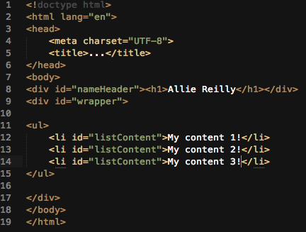

Week Two Technical Blog
Difference between Margin, border, & padding
The border is the space around the content. Margin is the space taht is given outside the border. The padding is the space between the content and the border.

Best practices with classes & IDs
Classes should be used when assigning to multiple pieces of content. ID can only be assigned to one piece of content.
Relative, Absolute, Fixed
Relative- meaning "relative to itself". It will stay in the static positioning, or where it would normally be located. If you wanted to change its location, it will move from its normal position to where you want. The normal positon is like its center point.
Absolute- Allows you to position an element exactly where you want it. The attributes to it are top, bottom, left and right. If you do not assign positioning, it will place itself relatively on the page. If you chose top:30px will be from the top and move 30px down.
Fixed- This positioning allows the element to always stay on the page. You would usually use top, bottom, left or right. For example, if you want the header to always show on the page no matter where you scroll, you would set the header to fixed and do top:0;
Inline vs Inline-block
Inline will set the elements to be in a line, respect left & right margins and padding but not top & bottom, cannot have a width and height set, and allow other elements to sit to their left and right.
Inline-block allow other elements to sit to their left and right, respect top & bottom margins and padding, and respect height and width.